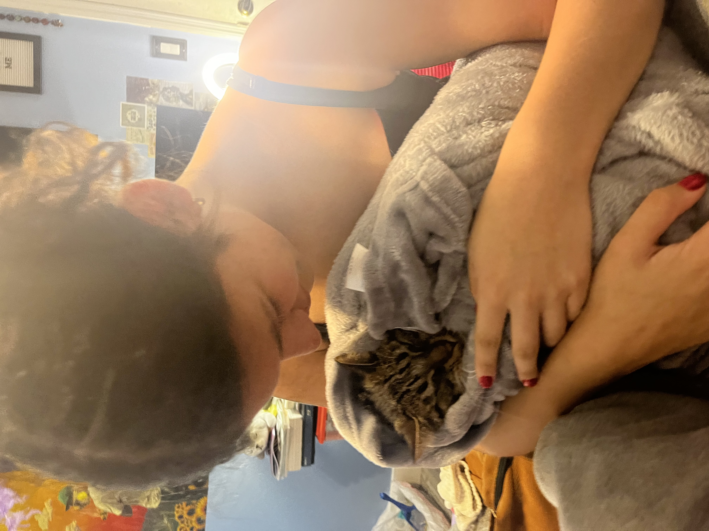
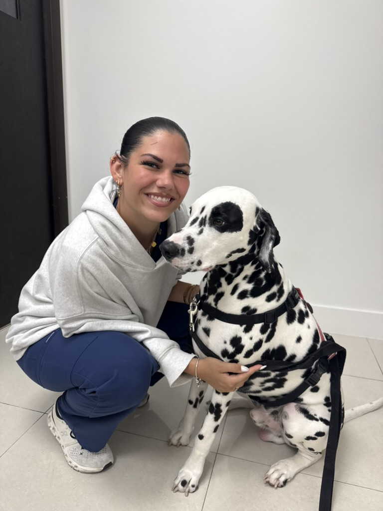
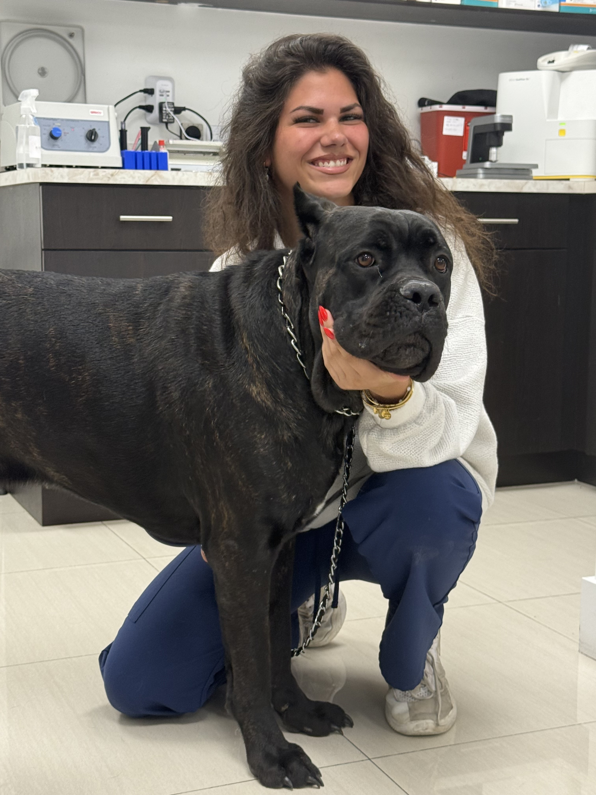
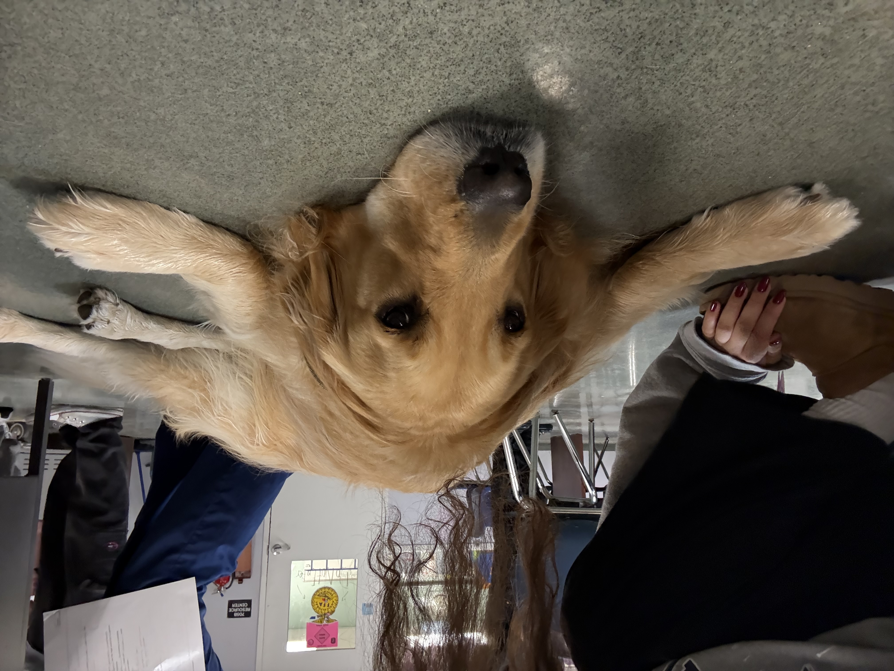
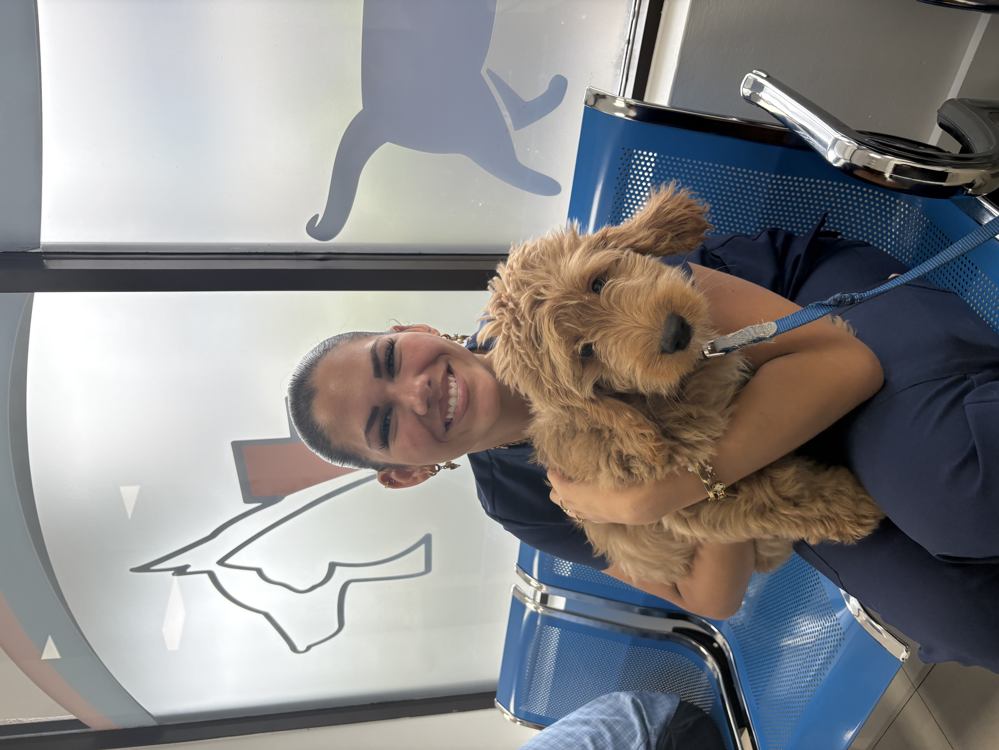
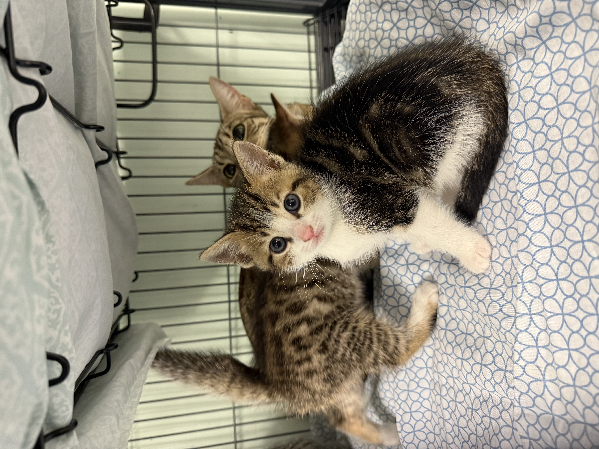

Public Florida shelter research
What helps animals get adopted?
Shelter data from Best Friends and the University of Florida suggests that adoption outcomes are influenced most strongly by health and fertility status, while breed and sex matter to a lesser degree depending on the shelter and animal type.
Biggest lift
Healthy animals
Adoption outcomes are strongest when animals are medically stable and ready for placement.
Strongest signal
Spay/neuter status
Prepared, sterilized pets are often easier to place than intact animals.
Watchlist
Breed bias
Breed is still a meaningful factor in some communities, though it varies by shelter and population.
Why
Why I’m interested in this project

I am deeply invested in this project because animal welfare and adoption outcomes are not just data points to me—they are real lives, real recovery stories, and real opportunities to help pets find safe, loving homes.
I have 4 years of veterinary program experience, and I am a certified veterinary technician with more than 500 hours of community service. My work has been rooted in compassionate animal care, rescue support, and helping vulnerable pets heal and thrive.
- I have worked with 3 different animal rescues and fostered both dogs and cats.
- I have nursed animals back to health, supported recovery, and helped with training and socialization.
- I have volunteered in community service settings where I helped animals and people alike through education, support, and care.
Collaborations and rescues
Clinical experience
Miami Welfare Animal Clinic
Animal Medical Center and Spa
Cute dogs
Golden retriever favorites




Health status
67%
Healthy animals tend to move faster through adoption pathways.
Sterilization
64%
Spayed or neutered pets are typically more adoptable because they are ready to go home.
Sex
58%
Sex matters less than health status or readiness, but it can influence placement timing.
Breed
52%
Breed can shape adoption demand, especially for dogs with strong local preferences.
Interactive explorer
Explore the adoption data
Interactive explorer
Key takeaway
Shelters typically see the strongest adoption lift when animals are healthy, already altered, and cleared for placement.
Breed profile
Fertility impact
Sex comparison
Condition outlook
What the public shelter data suggests
- Health is the leading predictor. Pets with fewer medical barriers usually find homes faster.
- Sterilization matters. Spayed and neutered animals are often easier to adopt because they are more immediately ready for placement.
- Breed and sex influence demand. These can shift depending on local adoption preference, shelter mix, and the dog/cat population.
- Context matters. A single shelter's intake mix can make one factor look stronger than another, so local comparisons are important.